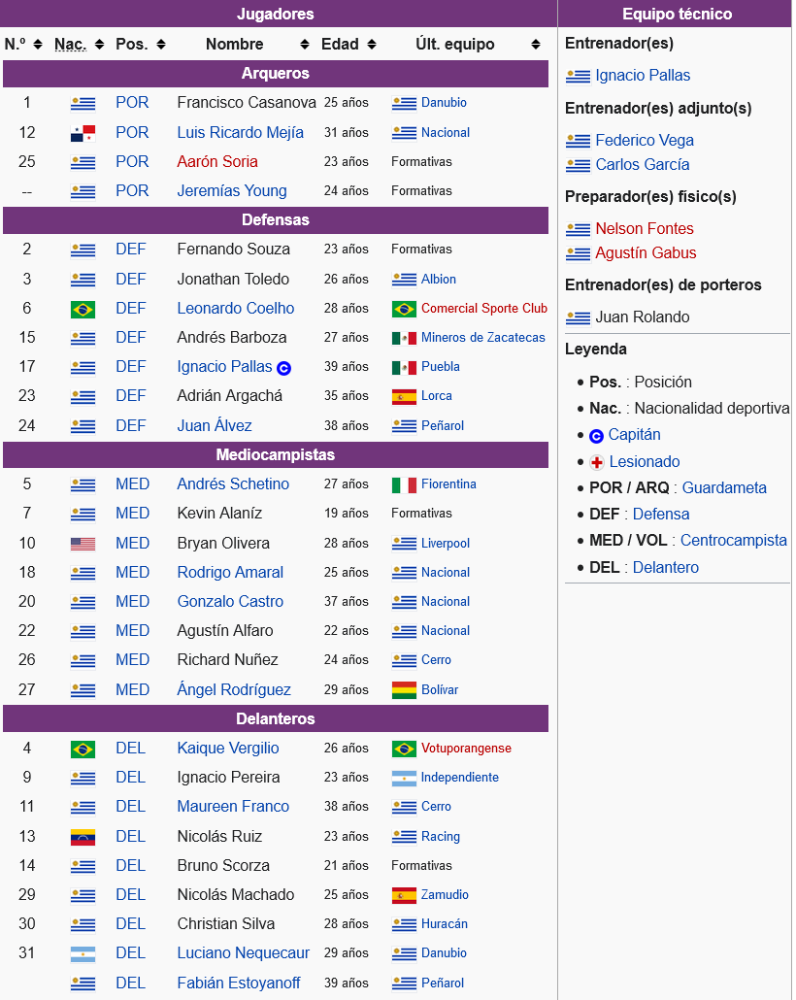

- Grupo A
- Grupo B
- Grupo C
- Grupo D
Centro Atletico Fénix: En el barrio de Capurro de Montevideo, en 1909 surge el Guaraní, equipo que es disuelto en 1913. El 7 de julio de 1916 un grupo de muchachos de la zona deciden reunirse con el fin de formar un club de fútbol. El nuevo club toma su nombre del ave mitológica que vuelve a nacer de sus propias cenizas, en referencia al anterior equipo del barrio. Comienza a disputar los primeros partidos en el barrio con singular éxito, hasta que se resuelve inscribir al club en la Liga uruguaya, alcanzando la Primera División en 1923, gracias al cisma del fútbol uruguayo. La historia de Fénix transcurrió en un permanente ascenso y descenso entre Primera y Segunda División, siendo de esta manera el equipo que más veces ha logrado el título de Segunda División. Récord compartido con Sud América con un total de 7 títulos. Fénix cuenta además con el goleador histórico de la B Jorge Puglia y la mayor cantidad de ascensos (8). El último ascenso se produjo en la temporada 2008/09. A esto se debe una frase nacida en el Campeonato Uruguayo de 1958 creada por el dibujante Héctor Mancini e instalada en la cultura popular del uruguayo que dice: «¡el Féni no baja!», grito de guerra de los hinchas albivioletas. En 2000 logró ascender a Primera después de 15 años en Segunda, con Miguel Ángel Puppo como técnico. El mejor momento de la historia del club llegó en el 2002, cuando de la mano de Juan Ramón Carrasco como D. T., cumplió la mejor temporada de su historia finalizando tercero en el Campeonato Uruguayo de Primera División, siendo el equipo más goleador del torneo (96 goles) contando con el goleador del mismo Germán Hornos con 25 goles y luego consagrándose campeón de la Liguilla 2002, clasificándose a la Copa Libertadores de América del 2003. En dicho torneo obtiene sendas victorias ante el Cruz Azul de México por 6:1 (hacía 19 años que un equipo uruguayo no anotaba 6 goles por Copa Libertadores) en histórico partido contando el Cruz Azul con más de 4 seleccionados de diferentes países (entre ellos Francisco Palencia, Oscar Pérez, Galdames, Sebastián Abreu) y ante el The Strongest de Bolivia por 4:0 en el Estadio Luis Franzini. Luego del partido la afición de Fénix cantaba «borom bom bom borom bom bom este es el cuadro de Juan Ramón», al referirse al director técnico Juan Ramón Carrasco. Al año siguiente (siendo el primer equipo «chico» en la historia en ganar dos liguillas consecutivas), volvió a participar de la Copa Libertadores, esta vez dirigido por Antonio Alzamendi, derrotando 2 a 1 al Vélez Sársfield como local y con un recordado penal atajado al famoso portero José Luis Chilavert por parte del portero albivioleta De León en el partido jugado en Buenos Aires. En la temporada 2010-11, dirigido por Rosario Martínez, logró la cuarta posición y clasificó a la Copa Sudamericana 2011, torneo en el cual tuvo el 'privilegio' de enfrentar en primera ronda al futuro monarca, Universidad de Chile, en el partido de ida cayó derrotado 1 a 0 de visitante en Santiago de Chile y 0 a 0 como local.
